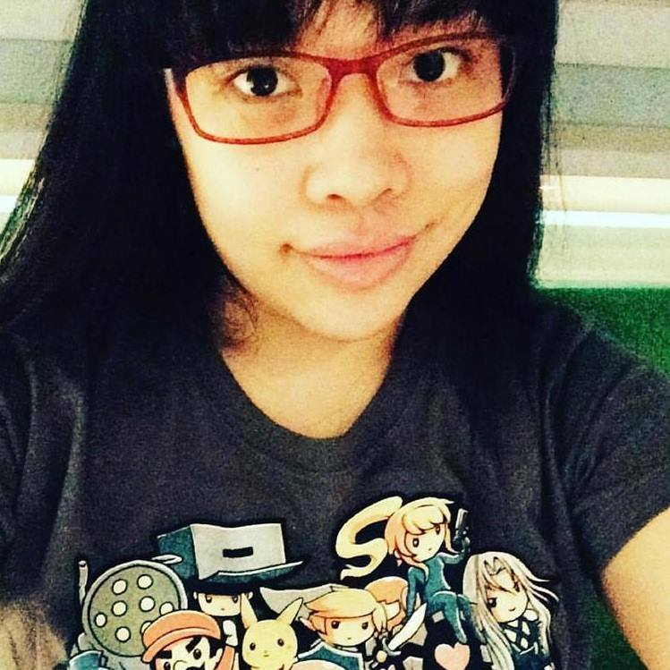

|  |
Cara Uymatiao
Graphic Designer, Ex-Game Developer, and Entrepreneur
I started as a graphic designer for a magazine publication but then ended up working in the game development industry.
I was a production manager and a level designer for an indie studio for three years. Afterwards, I spent a couple of years working as a graphic designer
& production manager for a game development conference that brought together indie and casual game developers.
I broke away from that in order to start up a small online store.
Today, I am trying to return to my graphic design roots while expanding my skill set by furthering my knowledge of web development.
|